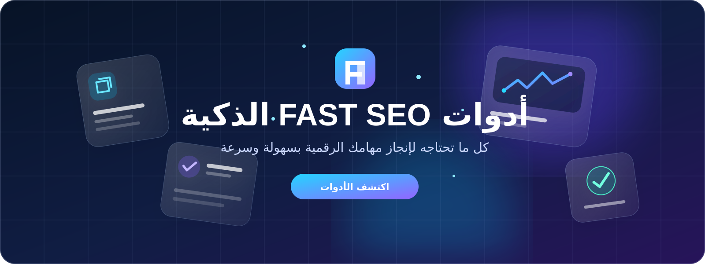

استكشف الأدوات والتقنيات
مجموعة منتقاة من الأدوات وسير العمل العملي لتسريع التطوير وتحويل المهام المتكررة إلى خطوات أبسط.

كل الأدوات في شبكة واحدة
تظهر أول 6 أدوات، ويمكنك عرض المزيد على دفعات.
الأدلة في الأدوات والتقنيات
أدوات الذكاء الاصطناعي للمطورين
دليل عملي من MSEO يساعدك على فهم الفكرة وتطبيقها في مشروعك.
اقرأ الدليل Website buildersدليل بناء المواقع باستخدام أدوات الذكاء الاصطناعي
دليل عملي من MSEO يساعدك على فهم الفكرة وتطبيقها في مشروعك.
اقرأ الدليلتبحث عن موضوع محدد؟
استخدم البحث في الصفحة الرئيسية للوصول إلى المقالات المرتبطة باهتماماتك.
ابحث في مكتبة MSEOكيفية اختيار الأدوات واستخدامها
اختر الأداة وفق المهمة المطلوبة، واقرأ وصفها وحدودها قبل إدخال البيانات. افحص المخرجات، ثم انسخها أو نزّلها إذا كانت الوظيفة توفر ذلك، واختبرها في بيئتك قبل اعتمادها.
هل تعمل كل الأدوات بالطريقة نفسها؟
لا؛ تختلف المدخلات والمخرجات والقيود حسب وظيفة كل أداة. راجع تعليمات الأداة نفسها قبل الاستخدام.
هل يمكن الاعتماد على المخرجات دون مراجعة؟
لا. تحقق من النتائج، خصوصًا عند توليد إعدادات أو شيفرات ستُنشر في موقع فعلي.
ما البيانات التي ينبغي عدم إدخالها؟
تجنب كلمات المرور ومفاتيح API والبيانات الشخصية أو المعلومات السرية ما لم تتحقق من طريقة المعالجة وسياسة الخصوصية.
ابدأ بـمحلل SEO ومنسق JSON وعداد الكلمات، أو تصفح أدلة البرمجة.